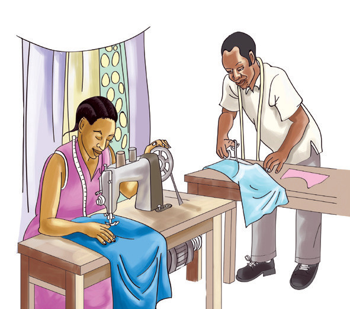
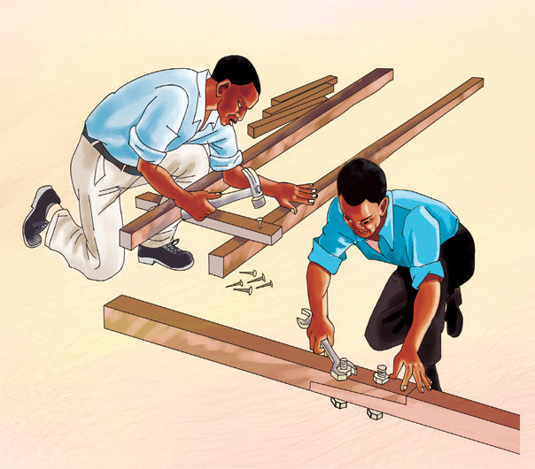
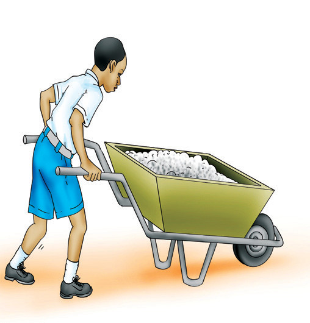

Matumizi ya vifaa vya kurahisisha kazi
Chunguza Kielelezo namba 2, kisha jibu maswali yanayofuata.
a

b

c

Kielelezo namba 2: Matumizi ya vifaa vya kurahisisha kazi
Maswali
1.Orodhesha vifaa vinavyotumika kurahisisha kazi vilivyooneshwa katika Kielelezo namba 2(a), (b) na (c).
2.Kuna tofauti gani kati ya kushona nguo kwa kutumia sindano ya mkono na cherehani?
3.Eleza kazi inayofanyika katika Kielelezo namba 2(b).
4.Kwa kutumia Kielelezo namba 2(c), kwa nini mwanafunzi anatumia kifaa kubeba mzigo badala ya kutumia mikono.